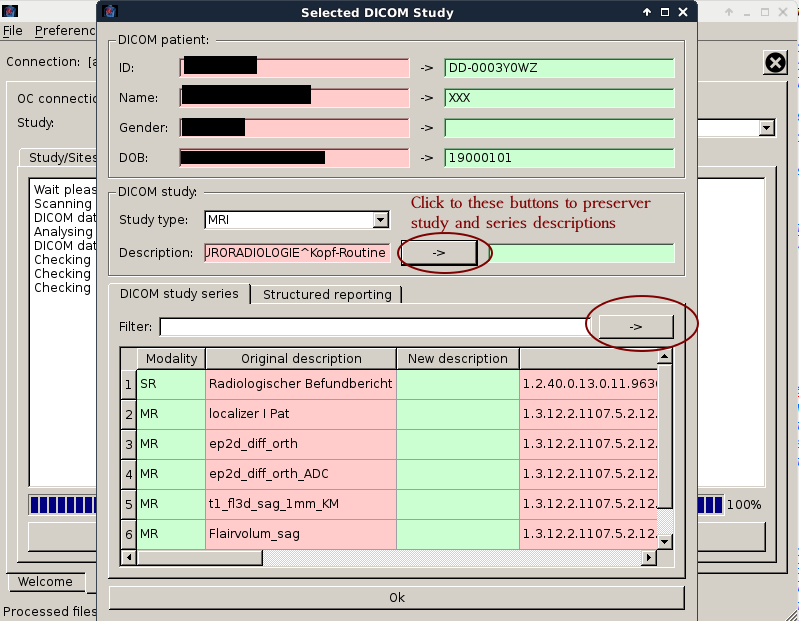
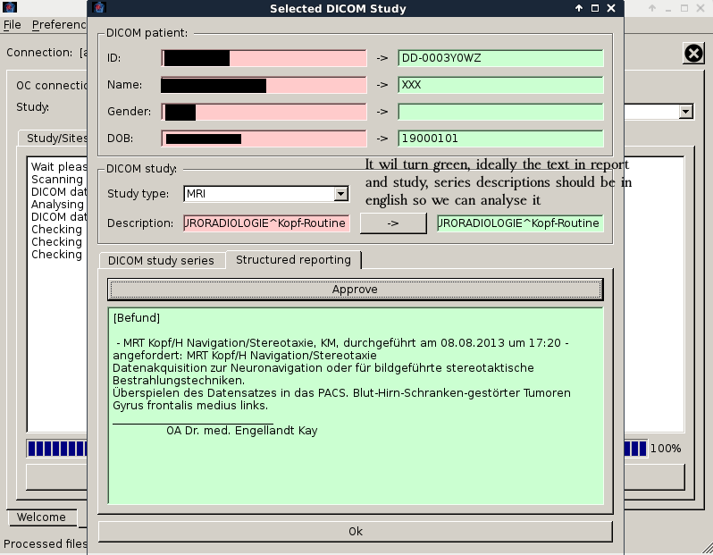
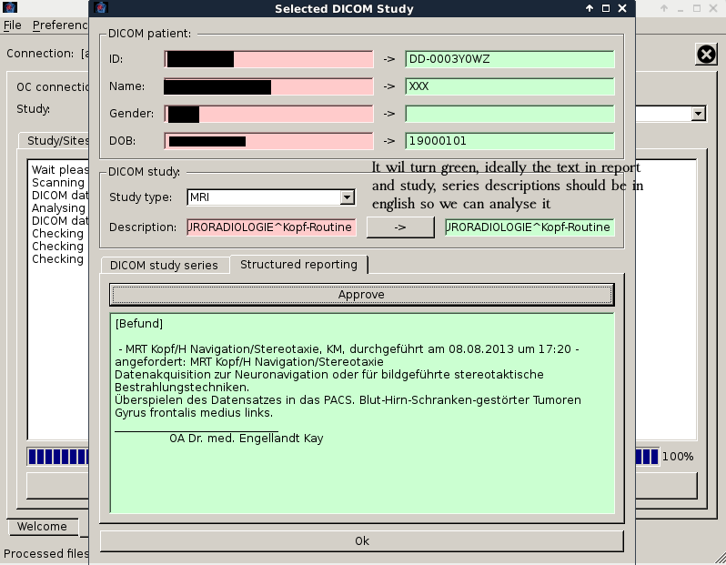

  

Abbildung 9: RadPlanBio Details zu DICOM-Studien
RadPlanBio ist eine Web-basierte Software zum Austausch und Teilen von Forschungsdaten über medizinische Krebsbehandlung, um multizentrische Studien zu ermöglichen. Der Grundgedanke dahinter ist die Studienverwaltung und elektronische Datenerfassungssysteme, mit Erweiterungen zum sicheren Hochladen von DICOM-Daten, bereitzustellen.
Der RadPlanBio-Client ist eine Komponente, die anonymisierte und lokale DICOM-Daten, sowie sichere Speicher- und Ladefunktionen dieser Daten bereitstellt. Dabei wird eine Verknüpfung mit den im RadPlanBio dazugehörigen Studienobjekten erstellt.
Die Benutzung der Software gestaltet sich unkompliziert und wird im nächsten Abschnitt erläutert.
Dieser Abschnitt behandelt die Anmeldung am RadPlanBio-Client, das Hochladen von DICOM-Daten und deren Verknüpfung mit Studienobjekten.
Zum Ausführen des Client muss die Desktop-Verknüpfung gestartet werden. Die Konfiguration des Client wird von einem Administrator übernommen.
Die Anmeldeaufforderung (Abb.: 1) wird nach dem Start angezeigt. Die Anmeldeinformationen sind dieselben wie beim Anmelden beim RadPlanBio Portal über den Webbrowser.
Nach erfolgreicher Anmeldung wird man zum Hauptmenü weitergeleitet. Die Abb. 2 zeigt:
Nachdem das Modul gestartet wurde muss es über den Reiter ausgewählt werden. (siehe Abb. 3) Das Modul bietet Zugriff auf die RadPlanBio Studienhierarchie. Hier wird die Studie, der Patient und Ereignis (Behandlung, Untersuchung, ...), mit denen die DICOM-Daten verknüpft werden sollen, ausgewählt. Im ersten Schritt wird die Studie und der Standort gewählt.
Im nächsten Reiter wird der Patient bestimmt (Abb. 4). Der Patient wird über die PID im RadPlanBio pseudonymisiert und
ändert sich nicht. Zusätzlich gibt es Subject Study ID’s, die den Patienten einer Studie zuordnen.
Hinweis: Die PID eines Patienten, kann über das RadPlanBio Portal herausgefunden werden. Bei Partnerstandorten wird
diese Funktion nur mit der integrierten Patientendatenbank unterstützt.
Als nächstes wählt man im Reiter Study events das Ereignis aus (Abb. 5). Ein Ereignis ist ein Zeitpunkt während einer Studie, bei dem Daten gesammelt und dokumentiert werden. Für jeden dieser Zeitpunkte gibt es Berichtsformulare. über diesen Reiter können nur Ereignisse ausgewählt werden, die spezielle DICOM-Berichtsformulare benötigen. Mit dem Hochladen der DICOM-Daten werden diese Formulare automatisch ausgefüllt.
Als letzter Schritt für die Verküpfung der DICOM-Daten mit der Studie im RadPlanBio muss eine DICOM-Studie, die zu dem zuvor ausgewählten Ereignis gehört, gewählt werden (Abb. 6). Die Daten aus den DICOM-Berichtsformularen bestimmen deren Verwendungszweck (z.B. Diagnose-CT, Bestrahlungsplan, usw.). Zusätzlich werden folgende Werte gespeichert, um die DICOM-Daten im PACS-Server zu lokalisieren:
Für jedes Ereignis können mehrere DICOM-Studien hochgeladen werden. Sobald eine DICOM-Studie hochgeladen wurde, wird die anonymisierte DICOM study UID unter Field Value angezeigt.
Danach werden die klinischen Daten mit den DICOM-Daten verknüpft, pseudonymisiert und hochgeladen. Dazu muss der Nutzer im Reiter Summary über Upload DICOM Data (Abb. 7) den Pfad zu den DICOM-Studien angeben.
Im geöffneten Fenster wählt man den Ordner, der die hochzuladene DICOM-Studie enthält aus. Der Ordner (mit Unterordner) wird automatisch durchsucht und die DICOM-Datenstruktur wird angezeigt (Abb. 8). Der Nutzer selektiert die für das Hochladen benötigten Daten der DICOM-Studie. In RadPlanBio kann nur eine DICOM-Studie pro Hochladen verknüpft werden. In Ausnahmefällen (z.B. Planungs-CT und Behandlungsplan sind in getrennten DICOM-Studien) ist es möglich einer DICOM-Studie zusätzlich DICOM-Serien anderer DICOM-Studien hinzuzufügen, um einen kompletten Datensatz hochladen zu können.
Danach erfolgt eine Konsistenzprüfung der ausgewählten DICOM-Daten. Der Vorgang wird beim Fehlschlagen der Prüfung abgebrochen. Im Anschluss erhält man eine Übersicht, wie die DICOM-Daten pseudonymisiert werden (Abb. 9). Es besteht die Möglichkeit die DICOM-Studien und -Serienbeschreibung zu behalten (werden standardmäßig entfernt), dazu muss der Nutzer allerdings sicherstellen, dass keine personenbezogene Daten in diesen Beschreibungen enthalten sind. Weiterhin kann man Daten von DICOM-SR einsehen und verändern.
Zum Schluss werden folgende Schritte ausgeführt:
Während des Vorgangs werden Fortschritt und Details angezeigt (Abb. 11). Bei erfolgreichem Abschluss wird eine Verknüpfung im DICOM-Berichtsformular gespeichert und die DICOM-Daten sind über das RadPlanBio-Webportal verfügbar.